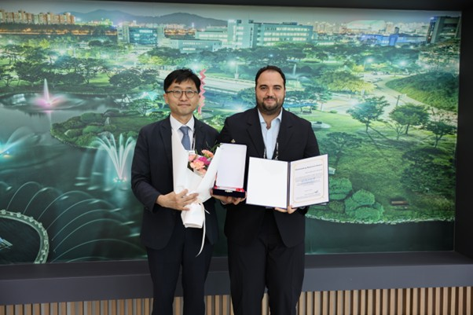
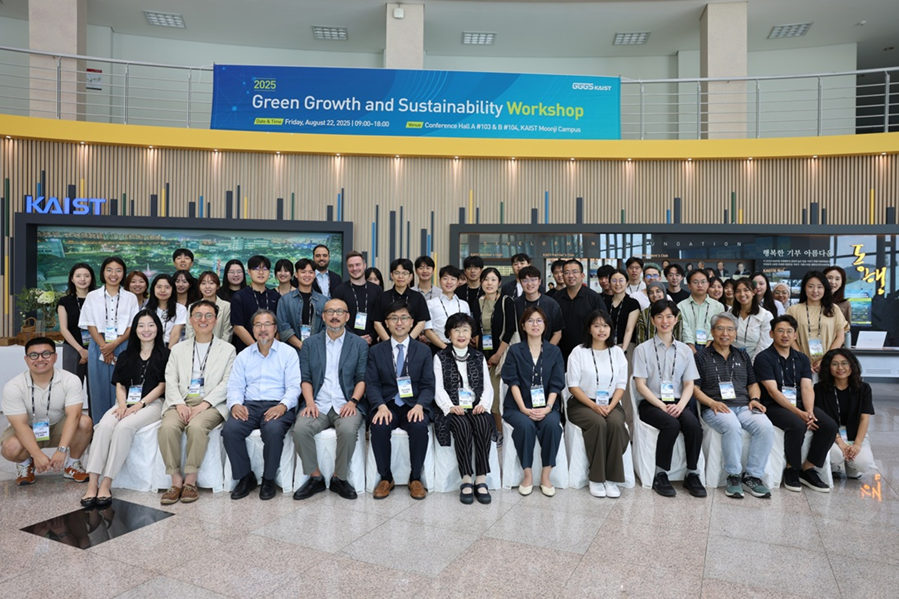
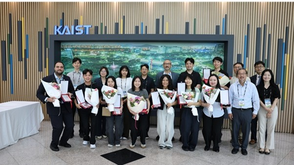

Congratulations Ahmed SS Mahmoud for winning the Outstanding Paper Award at the 2025 GGGS Workshop and winning the Outstanding Presentation Award at the 2025 KAIST Joint Academic Workshop!
KAIST IAM Group’s own Ahmed SS Mahmoud received the Outstanding Paper Award for his outstanding research analyzing the impacts of autonomous vehicle adoption on transportation, energy, and emissions using GCAM.

The award was presented at the 2025 KAIST Green Growth & Sustainability Workshop, held on August 22 to showcase cutting-edge research in sustainability and climate change at KAIST.
Organized by the Graduate School of Green Growth and Sustainable Development (GGGS), the workshop brought together KAIST researchers to share innovative ideas and promote collaboration toward achieving carbon neutrality. Mahmoud’s work was recognized for its academic rigor, policy relevance, and significant contribution to sustainable mobility and energy strategies.
In addition, on August 29, 2025, he was awarded the Outstanding Presentation Award at the 2025 KAIST Joint Academic Workshop hosted by the School of Business and Technology Management (BTM), the Graduate School of Innovation and Technology Management (I&TM), and the Graduate School of Global Digital Innovation (GDI).
Congratulations Ahmed!

우리 대학은 8월 22일(금) 문지캠퍼스에서 「2025 KAIST Green Growth & Sustainability Workshop」을 성공적으로 개최했다고 밝혔다. KAIST 녹색성장지속가능대학원(GGGS)이 주관한 이번 워크숍은 KAIST 재학생들의 기후변화 대응 및 지속가능성 연구 성과를 공유하고, 탄소중립과 녹색성장을 지향하는 교내 다양한 학문 간 융합연구를 촉진하며, 학술교류를 활성화하기 위해 올해 처음으로 마련됐다.
오전 행사는 우리 대학 이광형 총장의 축사로 문을 열었으며, 오후에는 김명자 우리 대학 이사장이 ‘기후 다중위기 시대의 KAIST’를 주제로 기조강연을 진행했다. 김 이사장은 지구 역사 및 인류 문명·산업 발전사를 되짚으며, 인류가 기후변화와 팬데믹 등 미래를 위협하는 여러 요소들이 서로 얽힌 ‘기후 다중위기(poly-crisis)’ 상황에 처해 있음을 언급했다. 이어, 기후 다중위기가 심화되는 현 시점에서 과학기술과 KAIST의 역할을 재조명하고, 녹색성장과 지속가능성을 중심으로 한 혁신적인 융합연구와 과학기술을 사회적 합의 및 글로벌 거버넌스로 연결하는 리더십의 중요성을 강조했다.
8월 22일 하루 동안 기후기술과 에너지전환, 녹색산업정책, 기후금융과 ESG, 저탄소 인프라 및 모빌리티 혁신, 탈탄소 시나리오와 기후AI 등을 주제로 한 총 8개의 세션에서 각 4편씩, 총 32편의 연구가 발표되었으며, 이에 대한 심도 있는 토론이 이어졌다.
김지효 교수와 김하나 교수가 공동좌장으로 진행한 오전 분과세션 1A, 2A에서는 ▲CSRD 체계 하 ESG 보고서의 비정상적 공시 양상 분석(Philippine C. M. Sarre, GGGS), ▲솔루션 저널리즘에서의 신뢰 형성이 기후 행동으로 이어지는 과정 분석(조혜원, 문술미래전략대학원), ▲왜 친환경 특허는 더 자주 실패하는가? : 갱신 패턴 비교에 따른 실증적 증거(임채은, GGGS), ▲한국 철강 산업 탈탄소화가 국내외 공급망에 미치는 환경·사회·경제적 영향 평가(성재욱, GGGS) 등이 다뤄졌다.
명재욱 교수와 최경록 교수가 진행한 오전 분과세션 1B, 2B에서는 ▲제로갭 셀에서의 산성 CO2 전기환원 효율 개선을 위한 시스템 수준 공정 전략(김지원, GGGS), ▲대사공학을 통한 내산성 강화 Mannheimia succiniciproducens 균주의 숙신산 생산 강화(김민호, 생명화학공학과), ▲매립 침출수에서 젖산 분해 박테리아 분리 및 정량적 평가(문호성, GGGS), ▲아민계 고분자 용액을 활용한 시멘트계 재료 내부 탄산화 양생 기술 개발(한지수, 건설및환경공학과) 등이 발표됐다.
김형철 교수와 믹전해원 교수가 진행한 오후 분과세션 3A, 4A에서는 ▲한국 배출권거래제에서 기업들의 전략적 선택 분석(김희연, GGGS), ▲원자력·재생에너지 동시 3배 확대 시나리오의 타당성 평가(안지석, 기술경영학부), ▲머신러닝을 활용한 통합평가모형 에뮬레이션(Yen Shin, 융합인재학부교양융합대학원), ▲녹색채권 기반 DICE 모형 확장 연구(조은아, GGGS) 등이 논의됐다.
최하연 교수와 한동훈 교수가 진행한 오후 분과세션 3B, 4B에서는 ▲대한민국 지방정부 차원의 기후정책 종합 데이터셋 구축 (하지흔, 융합인재학부), ▲도시 모빌리티 시스템 내 초소형 전기차: 지속가능한 확산을 위한 시공간·환경 분석(김에릭민, GGGS), ▲TRIPy: 방류·온도·수질 적용이 가능한 확장형 하천 경로 모델(박세린, GGGS), ▲SOFC 음극용 고성능 스피넬–GDC 복합 나노섬유 전극 개발(문영현, GGGS) 등이 발표됐다.
시상식에서는 최우수논문상, 최우수발표상, 우수연구상, 혁신연구상 등에 대한 시상이 이뤄졌다.
최우수논문상: ▲이제건, 생명화학공학과(바이오-전기 하이브리드 시스템을 이용한 이산화탄소의 직접 젖산 전환)
최우수발표상: ▲김정원, 기술경영학부(커뮤니티 이익과 함께하는 탄소중립: 텍사스 매립가스 회수의 사회경제적 효과)
우수연구상: ▲Ahmed SS Mahmoud, 기술경영학부(자율주행차 보급이 교통·에너지·배출에 미치는 영향을 통합평가모형으로 분석), ▲남지영, 녹색성장지속가능대학원(기후, 도시 형태, 도시 이동성: 연령대에 따른 관계의 차이), ▲김창현, 기술경영학부(환경 규제가 다국적 기업 운영에 미치는 ESG 리스크 변화), ▲이홍관, 녹색성장지속가능대학원(지방 정부 에너지 정책 혼합에 따른 기업 탄소배출 추정: 비용 기반 접근)
혁신연구상: ▲정윤경, 녹색성장지속가능대학원(도로 포장 관리 시스템에서의 자율주행 트럭 최적 경로 설계), ▲김민규, GGGS(공급망 구조 변화 분석을 위한 입력-산출 그래프 신경망 프레임워크 개발), ▲이현지, 녹색성장지속가능대학원(ESG에서의 공약과 실제 이행 간의 불일치), ▲김찬미, 녹색성장지속가능대학원(중앙정부와 지방정부 간 기후정책 담론의 다층적 분석: 텍스트 마이닝 기반 접근)

수상자들은 기후위기 대응과 지속가능성 향상을 위한 창의적이고 실질적인 연구 성과로 높은 평가를 받았다.
GGGS 5기 석사과정 오규빈 학생은 “이번 워크숍을 통해 다양한 연구자들의 관점을 접하며 제 연구의 방향성을 새롭게 모색할 수 있었다”며 “앞으로도 기후위기 대응과 지속가능성 증진을 위한 학제적 협력 연구에 적극 참여하고 싶다”고 소감을 전했다.
엄지용 녹색성장지속가능대학원장은 “이번 워크숍은 KAIST 내 과학기술, 정책, 경영 분야의 다양한 연구자들이 한자리에 모여 기후위기 대응과 지속가능성을 위한 퍼즐을 함께 맞춰가는 융합연구를 선보인 첫 무대”라며, “심화되는 기후위기 속에서 KAIST가 맡은 사명을 범 캠퍼스적 협력을 통해 체계적으로 실행하기 시작했다는 점에서 매우 뜻깊게 생각한다”고 말했다.